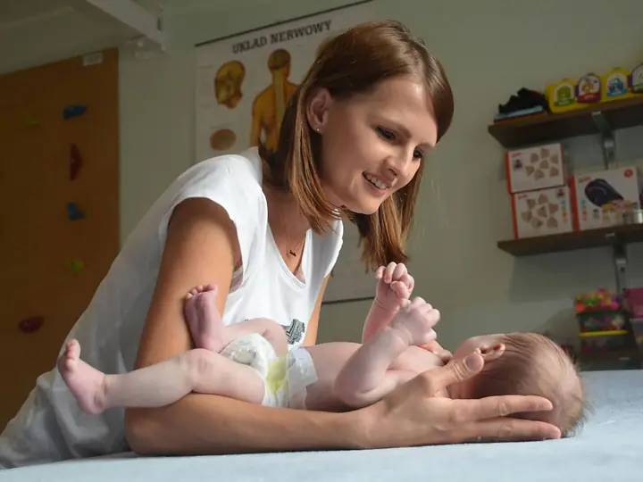

mgr Natalia Krajniak
Noworodki, niemowlęta i dzieci. Integracja sensoryczna.
Fizjoterapeutka po AWF w Poznaniu, certyfikowana terapeutka NDT Bobath i Integracji Sensorycznej. Zajmuje się rozwojem i rehabilitacją najmłodszych i stale poszerza kwalifikacje na kursach i szkoleniach, żeby pomagać małym pacjentom osiągać ich wielkie cele.